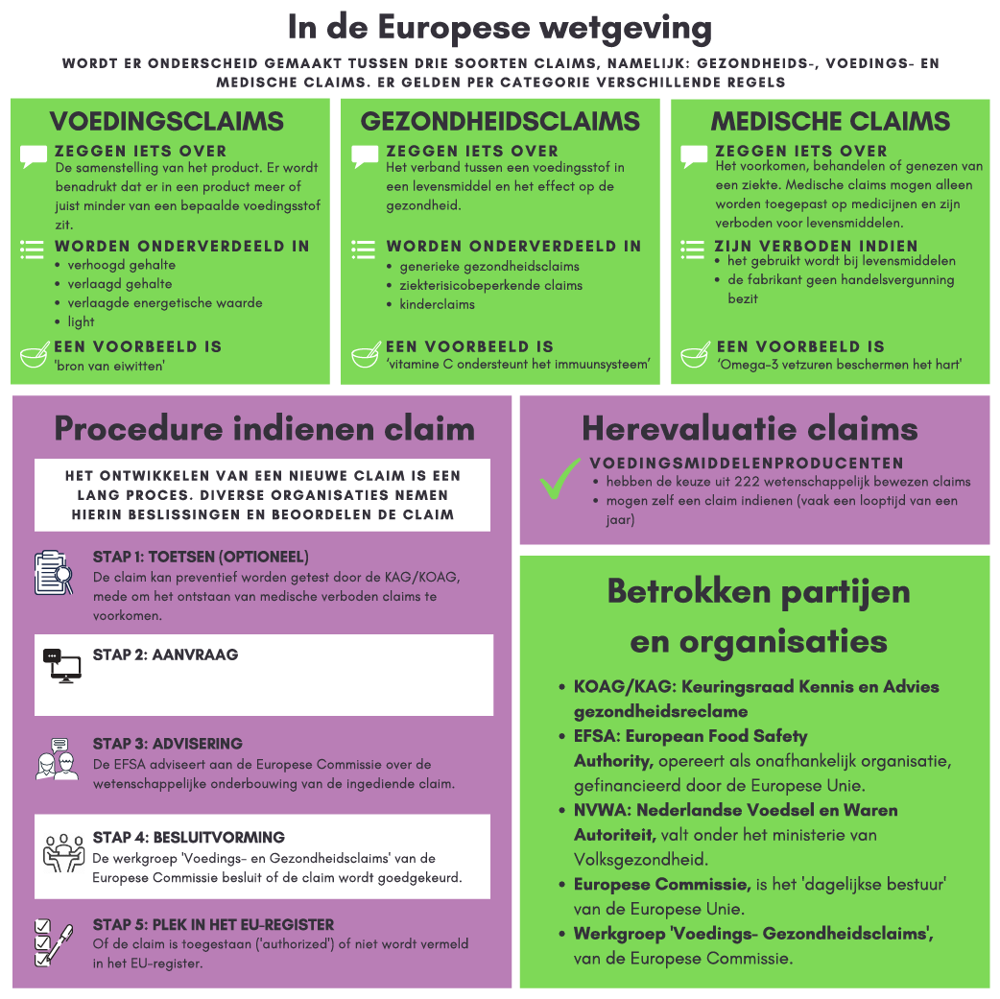

Er gaat een lange procedure aan vooraf wanneer een voedingsmiddelenproducent een claim wilt gebruiken op het etiket of de presentatie van het product via reclame (internet, tv-commercials, sociale media). In de Europese Unie mogen voedings- en gezondheidsclaims voor levensmiddelen alleen worden gebruikt als deze in overeenstemming zijn met Verordening (EG) nr. 1924/2006. De European Food Safety Authority (EFSA) beoordeeld nieuw ingediende claims. Als deze claims wetenschappelijk gevalideerd zijn door de EFSA en ze goedgekeurd zijn door de Europese Commissie en de lidstaten, worden deze toegevoegd aan het EU-register.

In de Europese Wetgeving wordt er onderscheid gemaakt tussen drie soorten claims, namelijk: gezondheids-, voedings- en medische claims. Gezondheidsclaims beschrijven het verband tussen een voedingsstof in een levensmiddel en het effect op de gezondheid. Voedingsclaims zeggen iets over de samenstelling van het product. Gezondheids- en voedingsclaims mogen toegepast worden op levensmiddelen, terwijl medische claims alleen op medische middelen mogen worden toegepast. Voordat deze drie claims verder worden toegelicht, wordt er eerst gekeken naar de algemene voorwaarden van claims.
| De claim mag niet misleidend zijn. De claim moet door de gemiddelde consument begrepen worden en duidelijk worden geëtiketteerd (artikel 3 in Claimsverordening) |
| De claim mag niet de consumptie van het product stimuleren (artikel 3 in Claimsverordening) |
| De claim mag niet de suggestie wekken dat het de gezondheid kan schaden als je het product niet gebruikt (artikel 3 in Claimsverordening) |
| De claim mag niet zinspelen op de snelheid of mate van gewichtsverlies (artikel 12 in Claimsverordening) |
Voedingsclaims zeggen iets over de samenstelling van het product. Ze benadrukken dat er in een product meer of juist minder van een bepaalde voedingsstof zit. Voorbeelden van voedingsclaims zijn ‘bron van eiwitten’ en ‘vetarm’. In de Claimsverordening zijn de voedingsclaims onderverdeeld in vier categorieën: verhoogd gehalte, verlaagd gehalte, verlaagde energetische waarde en light. Voor de tien producten in dit adviesrapport zullen voedingsclaims niet van toepassing zijn.
| verhoogd gehalte | Wanneer een bepaald nutriënt met tenminste 30% meer aanwezig is dan in vergelijkbare producten |
| verlaagde gehalte | wanneer een bepaalde nutriënt minimaal 30% minder aanwezig is dan in vergelijkbare producten |
| verlaagde energetische waarde | wanneer een product minimaal 30% minder calorieën bevat dan vergelijkbare producten |
| light | hiervoor gelden dezelfde voorwaarden als bij ‘verlaagde energetische waarde’ |
Medische claims maken een bewering over het voorkomen, behandelen of genezen van een ziekte. Medische claims mogen alleen worden toegepast op medicijnen en zijn verboden voor levensmiddelen. Op de verpakking of op het etiket van een levensmiddel of voedingssupplement mag op geen enkele wijze gesuggereerd worden dat het product ziektes kan genezen, behandelen of voorkomen. Ook tekst, waarin staat dat het product zorgt voor een herstel of verbetering van de gezondheid, wordt beschouwd als een medische claim. Voor de tien producten in dit adviesrapport zullen medische claims daardoor niet van toepassing zijn.
Voor medische claims gelden andere regels dan voor voedings- en gezondheidsclaims. De fabrikant moet namelijk een handelsvergunning van de Europese Gemeenschap (EG) of van het College ter Beoordeling van Geneesmiddelen (CBG). Zonder handelsvergunning mag er geen reclame gemaakt worden voor het geneesmiddel.
Het verschil tussen gezondheidsclaims en medische claims is subtiel. Wanneer op een product vermeld staat ‘ter ondersteuning van het metabolisme’, gaat het hier om een gezondheidsclaim. Het gaat namelijk om het metabolisme en ieder gezond mens heeft een metabolisme. De claim ‘tegen verstopping’ mag echter niet gebruikt worden. Verstopping hoort niet bij de normale werking van het lichaam en met deze claim wordt gesuggereerd dat het metabolisme verbetert, dus gaat het hier om een medische claim.
Om het onderscheid duidelijk te maken voor levensmiddelenproducenten, heeft de Keuringsraad de Code voor Aanprijzing Gezondheidsproducten (CAG) met gezondheidsclaims opgesteld. Deze lijst is afgestemd met het Ministerie van Volksgezondheid, Welzijn en Sport en de NVWA en bepaalt het grensvlak tussen gezondheidsclaims en medische claims.
Gezondheidsclaims beschrijven het verband tussen een voedingsstof in een levensmiddel en het effect op de gezondheid. Volgens de wet zijn er drie soorten gezondheidsclaims:
“Algemene beweringen over het effect van een nutriënt of andere stof op de groei, ontwikkeling en de functies van het lichaam, psychologische- en gedragsfuncties en afslanken en gewichtscontrole”. Voorbeelden zijn: ‘vitamine C ondersteunt het immuunsysteem’ en ‘voedingsvezels bevordert de stoelgang’.”
‘Claims die impliceren dat een product of ingrediënt de risicofactor op het ontstaan van een bepaalde ziekte helpt te verlagen’. Het gaat dus niet over het verlagen van de kans op de ziekte zelf, maar over de risico’s die invloed hebben op de ziekte. Bijvoorbeeld ‘plantensterolen helpen het cholesterolgehalte in bloed te verlagen’. Wanneer de risicofactor cholesterolgehalte hoog is, kan dit de kans op het ontwikkelen van coronaire hartziekten verhogen.
Kinderclaims zijn gericht op de groei, ontwikkeling en gezondheid van kinderen. Bijvoorbeeld ‘calcium is nodig voor een normale groei en ontwikkeling van het beendergestel van kinderen’.
Er gaat een lange procedure aan vooraf wanneer een levensmiddelenproducent een gezondheidsclaim wilt gebruiken. In de Europese Unie mogen voedings- en gezondheidsclaims voor levensmiddelen alleen worden gebruikt in de etikettering en presentatie van of reclame voor levensmiddelen als zij in overeenstemming zijn met de Claimsverordening. In de Claimsverordening staat het wettelijk kader beschreven voor het gebruik van voedings- en gezondheidsclaims.
Via de website van de European Food Safety Authority (EFSA) kan met een aanvraagformulier een nieuwe gezondheidsclaim worden ingediend. De EFSA bekijkt de bijgeleverde wetenschappelijke onderzoeken van de gezondheidsclaim. De wetenschappelijke bronnen zijn een belangrijk aspect binnen het indienen van gezondheidsclaims, want alleen gezondheidsclaims die wetenschappelijk onderbouwd zijn, hebben kans om toegelaten te worden in de Claimsverordening. De EFSA geeft op basis van de wetenschappelijke onderbouwing van de nieuw ingediende gezondheidsclaim, advies aan de Europese Commissie. Vervolgens worden in de Europese Commissiewerkgroep ‘Voedings- en Gezondheidsclaims’ nieuw ingediende gezondheidsclaims besproken en besloten of zij worden goedgekeurd.
Bij het indienen van een nieuwe gezondheidsclaim bij de EFSA, moet de bevoegde nationale autoriteit van de lidstaat worden vermeld. Voor Nederland is dat de Nederlandse Voedsel en Waren Autoriteit (NVWA). Nadat het aanvraagformulier is ontvangen door de NVWA, sturen zij het binnen twee weken op naar de EFSA. Het kan een jaar duren voordat de EFSA een uitslag kan geven aan de Europese Commissie.
Wanneer een levensmiddelenproducent een nieuwe gezondheidsclaim wil indienen, kan het product preventief getoetst worden op publiek gerichte reclame-uitingen via de Keuringsraad Kennis en Advies Gezondheidsreclame (KOAG/KAG). Op deze manier wordt voorkomen dat er verboden medische claims worden gemaakt op het etiket of reclame-uiting en dat de gezondheidsclaim voldoet aan de wet- en regelgeving. Bij goedkeuring van een reclame-uiting door de KOAG/KAG, wordt voorkomen dat de NWVA maatregelen treft. De NWVA is namelijk bevoegd om op basis van de Warenwet en de Geneesmiddelenwet op te treden wanneer voeding- en gezondheidsclaim niet correct worden gebruikt of het gebruik van medische claims die verboden zijn bij levensmiddelen.
Een bedrijf dat een door de KOAG/KAG vooraf goedgekeurde reclame-uiting gebruikt, wordt niet rechtstreeks daarop aangesproken door de NVWA. Bij overtreding van claims kan de NVWA een schriftelijke waarschuwing geven of direct een boete opleggen. Boetes kunnen variëren van circa €1000,- voor gezondheidsclaims, tot €30.000,- voor medische claims (NVWA, 2019).
De Europese Commissie houdt een register bij waarop te zien is of een claim is toegelaten. Afgewezen claims zijn ook opgenomen in het register, met daarbij de reden van afwijzen op basis van EFSA-adviezen. Het register bevat daarnaast informatie over de status van de claim; of voor deze claims een vergunning is verleend (samen met de toegestane bewoordingen, gebruiksvoorwaarden en/of beperkingen), dat ze niet zijn toegestaan (met redenen) of dat ze ‘on-hold’ staan. Wanneer een claim ‘on-hold’ staat betekent het dat de uiteindelijke beslissing voor het toestaan of afwijzen van de claim opgeschort is. Deze claims moeten voldoen aan de voorwaarden in de ‘Indicatieve lijst’ van de Keuringsraad Het register wordt regelmatig bijgewerkt om nieuwe goedgekeurde claims in op te nemen. Bovendien biedt het nuttige informatie, transparantie voor nationale controle-instanties (voor Nederland de NVWA en Keuringsraad), de belanghebbende en consumenten.
Voedingsmiddelenproducenten die een gezondheidsclaim op hun product willen zetten, hebben sinds 14 december 2012 alleen nog de keuze uit 222 claims die wetenschappelijk zijn bewezen en op de Europese lijst met toegestane claims staan. De toelating van claims is een continu proces.. De levensmiddelenproducent dient dan zelf een dossier in bij de EFSA. Uit de praktijk blijkt dat herbeoordelingen van dossiers een looptijd rond een jaar vanaf aanvraag kunnen hebben. Onderzoek dat is gepubliceerd in gerenommeerde vaktijdschriften met peer-reviewed onderzoek als ‘Nature’, ‘Science’, ‘Appetite’ of ‘British Journal of Nutrition’ kent een hogere wetenschappelijke waarde en wordt mogelijk sneller beoordeeld.